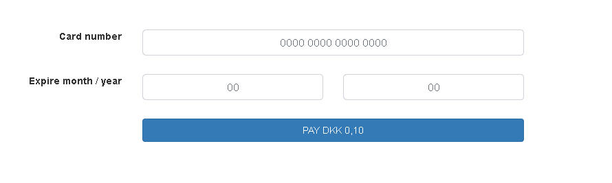
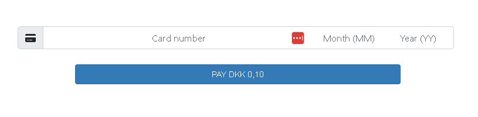

Introduction
Payonic
Payonic is the cutting-edge payment service provider that revolutionizes the way businesses handle transactions. With a primary focus on CIT (Cardholder Initiated Transactions) and MIT (Merchant Initiated Transactions) network tokenization, we empower businesses to streamline their payment processes, enhance security, and provide a seamless experience for both customers and merchants.
CIT
With CIT network tokenization, we ensure that each cardholder-initiated transaction is securely tokenized, replacing sensitive payment information with unique identifiers. By doing so, we eliminate the need for businesses to store sensitive card data, significantly reducing the risk of data breaches and enhancing overall security. This not only safeguards customer information but also instills trust and confidence in your brand.
MIT
Additionally, our MIT network tokenization provides merchants with greater control and flexibility over recurring or subscription-based payments. Through tokenization, we create a secure token that represents the customer's payment information, eliminating the need to store actual card data on the merchant's system. This enhances the customer experience by simplifying the payment process while maintaining the highest standards of security.
Hosted Fields
As integration method Payonic offers hosted fields. Hosted fields provide a secure and seamless way to collect sensitive payment information from your customers while keeping that data off your own servers.
Rather than building and managing an entire payment form on your website, hosted fields allow you to rely on an external payment service provider's infrastructure. They provide you with pre-built, secure form fields that are hosted on the payment service provider's servers. These fields can be embedded within your website or application, appearing visually as part of your site.
Typically, hosted fields include input fields for your customers to enter their card number, expiration date, CVV (Card Verification Value), and any additional required information. When a customer enters their payment details into these fields and submits the form, the information is securely transmitted to the payment service provider's servers for processing.
One of the primary advantages of using hosted fields is that the sensitive payment data never touches your own server. This reduces your PCI DSS (Payment Card Industry Data Security Standard) compliance requirements and helps mitigate the risks associated with handling and storing such sensitive information. The responsibility for data security lies with the payment service provider, which specializes in maintaining robust security measures.
Additionally, hosted fields offer a seamless user experience. By integrating the fields directly into your website, they maintain the same design and visual aesthetics, ensuring a consistent user interface. This approach eliminates the need to redirect customers to an external payment page, reducing friction during the checkout process and enhancing trust.
By leveraging hosted fields, you can provide a secure, user-friendly payment experience for your customers while offloading the complexities of payment security and compliance to a trusted payment service provider. This allows you to focus on your core business activities while ensuring that your customers' payment data is handled in a secure and compliant manner.
In summary, hosted fields are a valuable feature when integrating a payment service solution online. They enable you to securely collect payment information, reduce compliance requirements, maintain a seamless user experience, and entrust the security of sensitive data to a specialized payment service provider.
Integration types
Payonic offers 3 types of hosted field integration types.
Individual fields
When using individual fields, the Card number, Expiry month, Expiry year and Security code can be placed individually on the page. An example of the hosted fields option is displayed below:

Payment strip
The payment strip is a single line hosted field, which is utilized in same method as the Hosted Fields.

Token - CIT
The dynamic fields window can also be initialized using an already created token. That means no input fields are generated for the customer to enter the details. Instead the system autenticates the payment using Verified By Visa / Mastercard Secure Code and prompts the customer if a challenge is met and autentication is required to fullfill the payment.